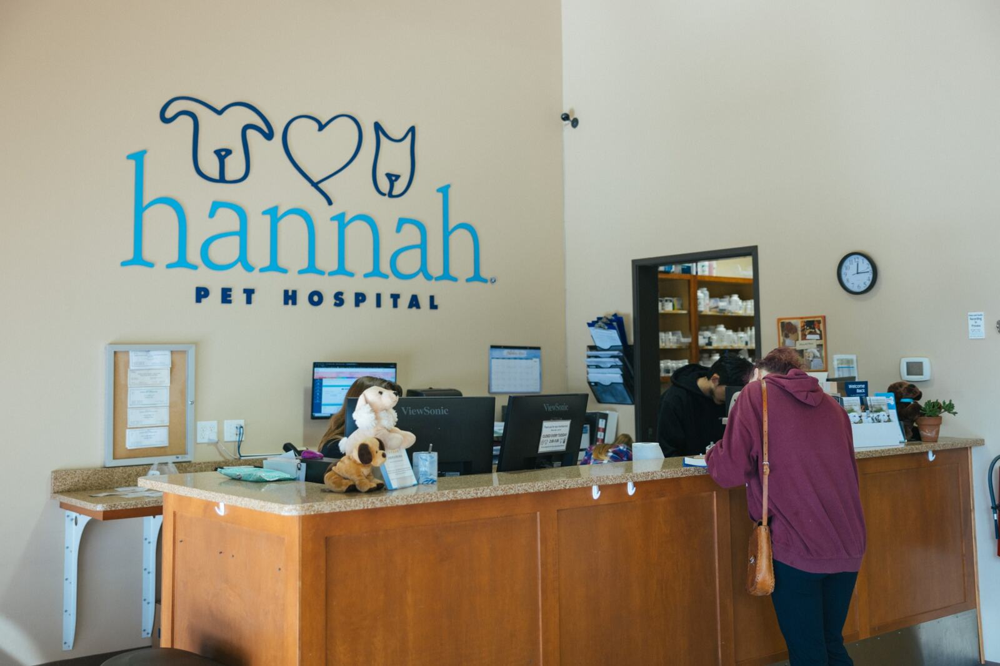

Member Services Academy
Service that Members remember
This Academy builds the service judgment used at the front desk, on the phone, in the treatment area, and at discharge: how to take care of the problem and take care of the person at the same time. Course 1 is live now.
Course 1 · Member Service Success — Connect, Listen, Respond

Your progress
Academy progress
Academy progress is calculated from Course 1 only, because Course 1 is the only live course in this Academy.
Course 1 progress: 0% — not started.
Prototype note. Progress, saved reflections, assessment scores, and sign-off text for Course 1 are stored in this browser only under the hls.member-services.course-1 namespace. Nothing is sent to a central system, and completion here is not a training record of record.
Curriculum
Courses in this Academy
Live now
1 · Member Service Success
Connect, Listen, Respond. Technical and personal needs, the five personal needs, the 3 Cs greeting, listening for meaning, assuring / empathizing / apologizing, and building lifetime relationships — plus practical health-literacy techniques for explaining Pet health information.
Six modules · 10-question final assessment · about 50–60 minutes
Not started
Start Course 1
Planned
2 · Phone Answering Expectations
Answering standards, holds, transfers, and high-volume call handling. Not built yet — the approved phone standard is the source of truth until this course is published.
Planned · content owner review pending
Planned
3 · Membership Enrollment Accuracy
Accurate enrollment, plan explanation, and what to confirm before an enrollment is submitted. Not built yet.
Planned · content owner review pending
Planned
4 · Cycle of Service
The Member experience from arrival through follow-up, mapped to each service moment. Not built yet.
Planned · content owner review pending
Who this Academy is for
Audience
Service Coordinators
Primary audience. Course 1 is the assigned starting point.
Membership Coordinators & Member Advocates
Shared service foundation before role-specific courses.
Medical team members
Useful for explaining Pet health information clearly and answering Member questions with care.
Leaders
Use Course 1's teach-back to coach service behavior consistently.